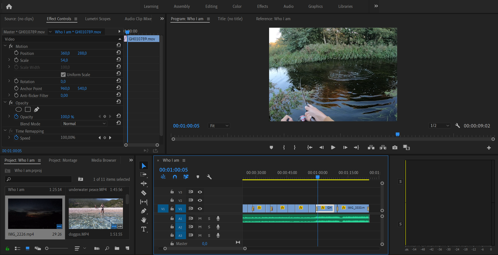
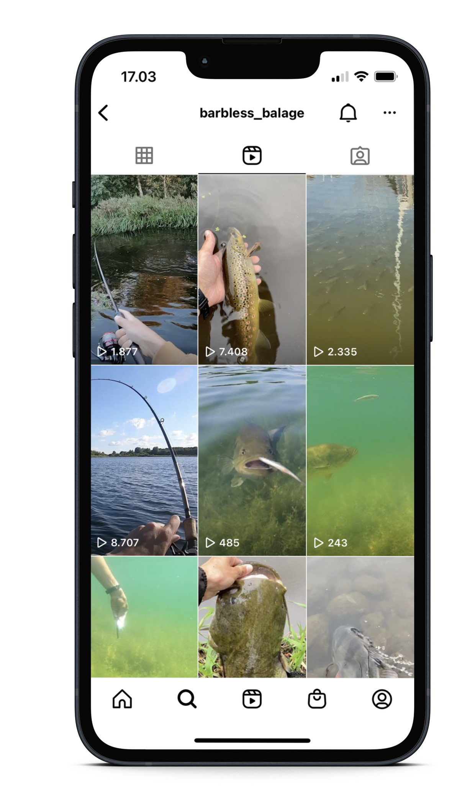

Manageing a SoMe channel
In a way, by maintaining my Instagram profile, I am practicing the role of a social media manager:
- I create content during my outing in nature by taking pictures and videos
- I edit the content with tools such as Premiere Pro
- I write educational and interesting copy texts
- I keep the channel updated and relevant by posting regularly
- I study the analytics and gain knowledge about the algorithm
Increasing my reach
In order to achieve organic growth and to reach as many people as possible I have to make efforts to please Instagram’s algorithm. Ultimately, I always strive to make my posts entertaining and interesting. This way they have a higher chance of being liked or shared, which then increases the chance of the algorithm showing them to more users.
I also learned form experience, that posts that have a lot of metadata like location, relevant hashtags and interesting caption are more likely to be liked and commented on, thus boosting the success of the post.
The rise of video
Recently, with the rise of TikTok and short videos, Instagram’s algorithm has been favouring content that is posted in the form of REELs. As a content creator, I have to be up to date with trends like this, and adjust my methods to be able to grow my reach.
For this reason, recently I have been focusing on creating video content. Now, when I go on a fishing adventure, I always have my GoPro with me, and when I capture good content, I often share it on the platform as a REEL. Consequently, this also pushed me to improve my video editing skills with Adobe Premiere Pro.
 